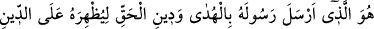

Havâs o gence: “Ey delikanlı, niçin namaz kılmıyorsun? Senin üzerine namaz da hac
gibi hatta ondan daha kuvvetli bir farzdır.” dedi.
O genç cevaben: “İhtiyar, namaz bana farz değildir” dedi. İbrâhim Havâs “Niçin? Sen
müslüman değil misin?” diye sorunca: “Hayır, değilim” diye cevap verdi. Bunun
üzerine ben: “Hangi dine mensupsun?” diye sordum. O genç şöyle cevap verdi:
“Hristiyanım, ancak dinimdeki samimiyetim tevekkülümle ortaya çıkacaktır. Çünkü
nefsim, tam bir tevekkül hâli içerisinde bulunduğunu iddiâ etti. Ben nefsimi bu konuda
hemen tasdik etmedim. Ta ki onu, Allah’tan başka kimsenin olmadığı bu boş araziye
getirdim. Burada nefsimi kışkırtıp hakikaten iddiâ ettiği gibi tevekkül ehli olup
olmadığını görmek için imtihan ediyordum.”
Gencin sözleri bitince İbrâhim Havâs ayağa kalktı ve yürüdü. Bana: “Onu kendi
hâline bırak, seninle birlikte yürüsün” dedi. Genç, Merv’in merkezine gelinceye kadar
bizimle birlikte yürüdü. İbrâhim Havâs yine ayağa kalktı, eskimiş olan elbisesini
çıkardı ve suyla yıkayıp temizledi. Gence adını sordu. O da, isminin Abdülmesih
olduğunu söyledi. İbrâhim Havâs, Abdülmesih’e “Burası Mekke’nin girişi, yani Harem-
i Şerif’tir. Allah Teâlâ, müslüman olmayanların buraya girmelerini yasakladı.
Kur’ân’da şöyle buyrulur: “Müşrikler ancak bir pislikten ibarettir. Artık bu
yıllarından sonra Mescid-i Haram’a yaklaşmasınlar” (Tevbe, 9/28) Nefsin hakkında
öğrenmek istediğin şeyi öğrendin. Artık Mekke’ye sakın girme. Seni Mekke’de
görürsek, sana zararımız dokunur.”
Hâmid anlatmaya şöyle devam etti: O genci orada bıraktık ve Mekke’ye girdik. Vakfe
yapmak için Arafat’a gittik. Otururken bir anda, üzerinde iki parça kumaş, ihrama girmiş
bir hâlde Abdülmesih’i gördük. İnsanlara selam vererek geldi ve yanımızda durdu.
İbrâhim Havâs’a doğru eğildi ve başından öptü. İbrâhim Havâs ona: “Ey Abdülmesih!
Hayırdır, ne bu hâl?” diye sordu. O da “Heyhât! Ben bugünden sonra Îsâ’nın değil, onun
da kul olduğu Allah’ın kuluyum” diye cevap verdi.
İbrâhim Havâs, başından geçenleri anlatmasını istedi. O da şöyle anlattı: Beni
bıraktığınız yerde oturuyordum. Bir hac kafilesi geldi. Müslümanların elbiselerini, dış
görünüşlerini beğenmedim, onları içimden kötüledim. Sonra birden ihramlı olduğumu
hissettim, gözüm Kâbe’ye ilişti. İşte o an gönlümde, İslâm hâricindeki diğer tüm dinler
sönüp gitti. Hemen müslüman oldum, guslettim ve ihrama girdim. İşte şimdi de
yanınızdayım.
Hâmid: İbrâhim Havâs bana döndü ve: “Bak, bu gencin Hristiyanlıktaki sıdk ve
samimiyeti nasıl da İslâm’la şereflenmesine vesile oldu.” dedi. Sonra, o genç bize
katıldı ve dervişler arasında ölüp de Rabbi’ne kavuşuncaya kadar bizden hiç ayrılmadı.
Hidayet ve tevfik Allah’tandır.